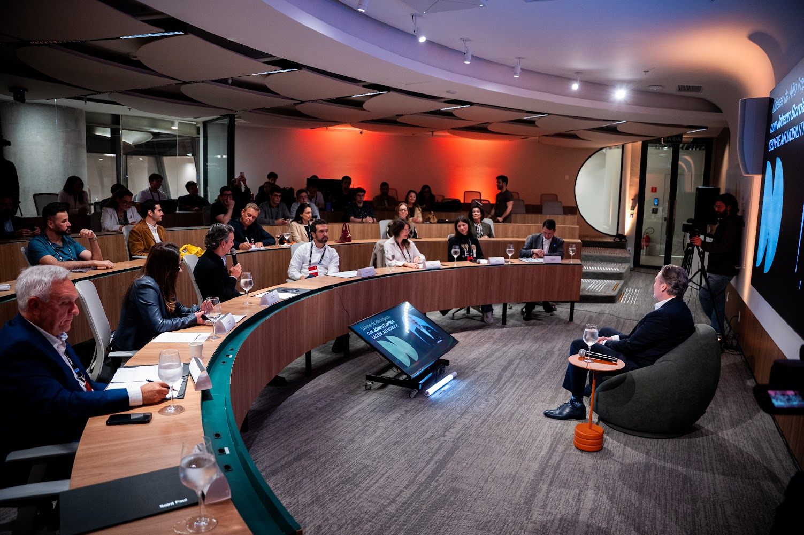
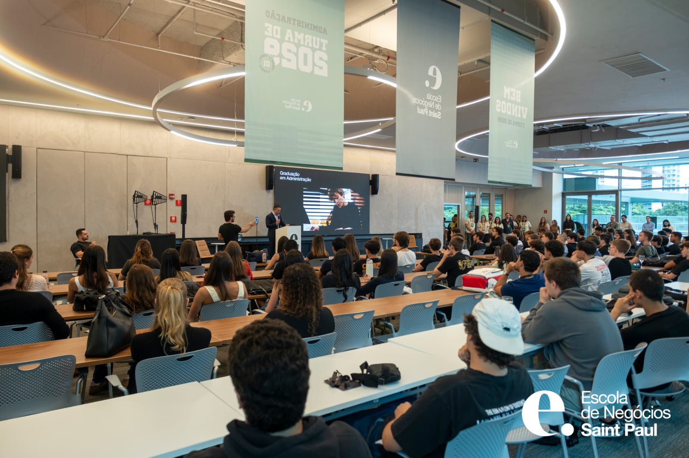

Missão
Transformar potencial em impacto.
Transformar potencial em impacto, formando profissionais capazes de resolver problemas reais por meio da prática e da inovação, e entregando às empresas projetos de excelência.






Diagnóstico, redesenho e implementação para empresas que cresceram e precisam de estrutura.

Os sintomas aparecem antes de o problema ganhar nome. Escolha o que mais parece com a sua empresa e veja o que está por trás dele.
Serviços
Cada frente tem escopos definidos. Escolha a que conversa com o seu desafio e veja exatamente o que entregamos.
01
Para tirar uma ideia do papel ou decidir uma expansão com número na mão.
Ver escopos
02
Para saber onde você compete, contra quem e para quem vende.
Ver escopos 03Para ser encontrado por quem já está procurando o que você vende.
Ver escopos
04
Para a operação que cresceu mais rápido que os processos.
Ver escopos
05
Para saber para onde vai o dinheiro e quanto cobrar.
Ver escopos 06Para usar inteligência artificial onde ela resolve um problema real.
Ver escoposSobre nós
Somos a consultoria estratégica da Escola de Negócios Saint Paul. Entramos na operação do cliente, mapeamos o que existe de fato e ficamos ao lado dele na implementação.

Uma Empresa Júnior é uma associação civil sem fins lucrativos, formada e gerida por estudantes de graduação. Ela aproxima a universidade do mercado ao desenvolver projetos para empresas, com orientação de professores e foco na formação prática dos estudantes.
Como trabalhamos
Entramos na operação, mapeamos o que existe de fato e ficamos ao seu lado até a mudança virar rotina.
Etapa 01 — Diagnóstico
Acompanhamos a operação de perto para entender o contexto, os gargalos e o que precisa mudar.
Etapa 02 — Redesenho
Desenhamos o processo novo com a sua equipe: fluxo, procedimento e indicadores.
Etapa 03 — Implementação
O processo redesenhado é testado com a equipe e ajustado antes de virar rotina.
Propósito, missão, visão e valores
Estratégia é traçar um caminho de um ponto até um objetivo. Para a empresa que nos contrata, é chegar aonde ela quer. Para quem trabalha aqui, é construir um propósito.
Transformar potencial em impacto.
Transformar potencial em impacto, formando profissionais capazes de resolver problemas reais por meio da prática e da inovação, e entregando às empresas projetos de excelência.
Referência em consultoria e IA.
Ser uma EJ referência em consultoria e IA e na criação de líderes, que incentive a iniciativa empreendedora e a busca por inovação.
Escolha um ponto do caminho para ver como cada valor aparece no projeto.
No que acreditamosSempre existe um jeito melhor, ou diferente, de fazer o que é feito há anos. Perguntamos “por quê” antes de aceitar o “como”.
Curiosidade
Vamos ver a operação com os próprios olhos antes de opinar.
Na prática Pedimos para o gestor desenhar o processo. Ele desenhou quatro passos. Acompanhamos um de verdade: eram nove.
Sentimento de dono
Assumimos o problema do cliente como nosso e entregamos no prazo prometido.
Na prática Escopo fechado, prazo por etapa e um professor orientador acompanhando. No fim, o indicador que estava no papel está rodando na rotina.
Proatividade
Não paramos no que foi pedido: questionamos o processo e propomos o que pode melhorar.
Na prática Cada projeto deixa estruturas, processos e rotinas melhores do que encontrou.
Cooperação
Construímos a solução junto com a sua equipe, e não só para ela.
Na prática O cliente recebe o processo redesenhado, testado com a equipe dele e ajustado antes de virar rotina.
Conversa de diagnóstico
Conte como sua operação funciona hoje. Na conversa de diagnóstico, mostramos por onde começar, com etapas e prazo.
Agendar diagnóstico